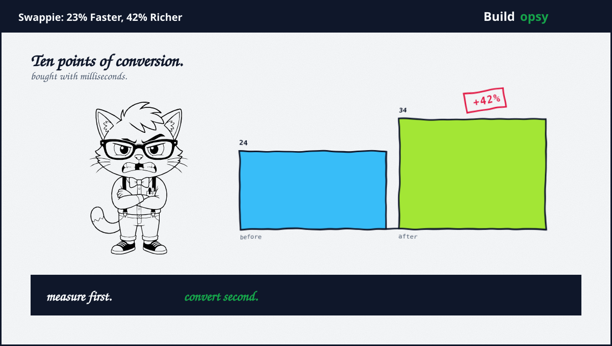
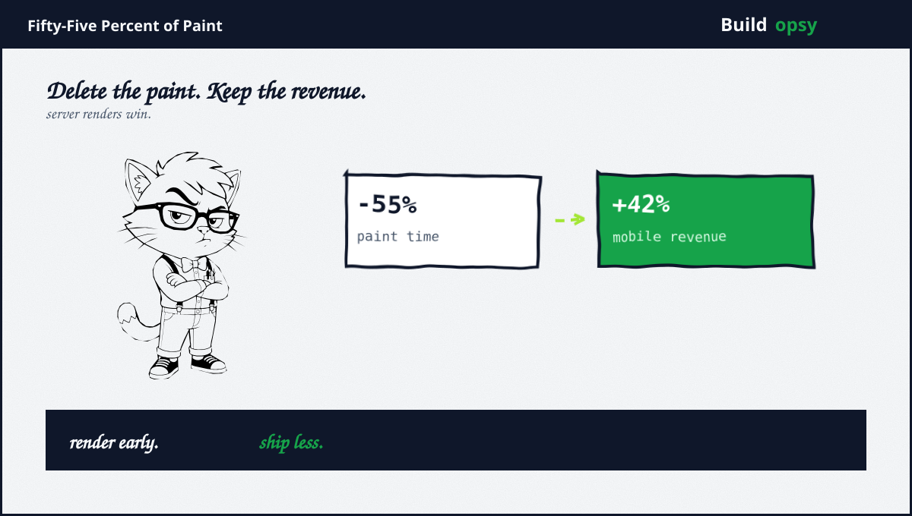

1. The Thesis
Every performance article opens with a statistic about impatience. I will open with a principle instead. A slow page tells the visitor their time matters less than your roadmap. A fast page tells the opposite. Conversion is simply what respect looks like inside a funnel. Swappie tested this principle the honest way, with a spreadsheet rather than a slogan. The spreadsheet now belongs in every performance review I conduct.
The method deserves attention before the numbers. The team correlated relative mobile conversion against average page load time in analytics before changing anything. That single chart did more political work than any audit. It converted speed from a feeling engineers complained about into a revenue line executives could read. Measurement first is not a platitude. It is the permit for everything that follows.
2. The Patient
Swappie sells refurbished phones across Europe, overwhelmingly on mobile web. The funnel showed the classic symptom: traffic rich, conversion poor, with relative mobile conversion near 24 percent. Field data pointed at paint plus stability. The largest contentful element arrived late. Layout shifted beneath thumbs at the worst moments. Nothing exotic. The ordinary slowness of a successful site that grew faster than its frontend discipline.
What impresses me, reviewing the case, is restraint in diagnosis. The team tracked Core Web Vitals from real users into analytics plus BigQuery rather than optimizing lab scores in isolation. Lab scores flatter. Field data accuses. They chose accusation, which meant fixing what actual visitors felt instead of what Lighthouse applauded.

3. The Treatment
The program ran three months and reads like a checklist I would prescribe. Render the largest element on the server wherever possible instead of the client. Reserve space for images so content below stops jumping. Wrap dynamic components in min-height containers sized from observed averages, releasing the constraint after render. Prune unused JavaScript plus CSS. Rationalize bundling and imports. None of these is clever. All of them compound, which is precisely why undisciplined teams skip them for cleverer projects.
Two decisions show taste. First, layout shifts were studied across viewports plus languages rather than assumed from one desktop test, catching shifts that only appear on narrow screens with long translations. Second, field metrics rode alongside lab scores the whole quarter, so every fix proved itself against visitors rather than simulators. Process is the product here. The fixes are commodity. The measurement discipline is the moat.
4. The Receipt
Page load time fell 23 percent. Largest paint fell 55 percent. Relative mobile conversion climbed from 24 to 34 percent. Mobile revenue rose 42 percent. Read the ratio again: roughly two points of conversion per point of load improvement, sustained across a quarter, on the highest-traffic surface the company owns. Vodafone Italy reported the same physics at different scale: 31 percent better paint, 8 percent more sales. iCook fixed layout slots for 15 percent better stability plus 10 percent more ad revenue. The pattern replicates because human impatience replicates.
42 percent more mobile revenue. No rebrand. No discount. Just milliseconds.Swappie case results, via web.dev
Price it in reverse with the downtime calculator. Revenue at risk per minute makes slowness legible the same way outages are legible: as money left outside. A funnel leaking ten conversion points to latency is a slow-motion outage nobody pages for. Marta pages for it.
5. Field Notes, 2026
The broader field has moved since this case without changing its moral. Chrome UX data through August 2026 puts 55.7 percent of origins in the green across all three vitals, up from barely half two years ago. Progress is real plus unevenly distributed. Interaction to Next Paint remains the hardest vital, with over four in ten sites missing its 200ms bar. Mobile still trails desktop by roughly seven points while carrying most of the traffic. Mobile converts near half the desktop rate. The industry keeps debating frameworks. Users keep rewarding milliseconds.
That gap is Marta professional territory. Every point of it is some team future case study, provided they measure first. The Swappie template travels intact across years because the underlying transaction never changes: respect, rendered fast, converts.
6. What to Steal
First, correlate before you optimize. One chart of conversion against load time buys more roadmap than ten audits. Without it you are asking for faith. With it you are reporting revenue.
Second, fix paint plus stability before interaction. Largest paint and layout shift respond to concrete, cheap interventions: server rendering, reserved space, pruned bundles. Interaction metrics follow a calm page the way applause follows performance.
Third, measure in the field alongside the lab. Ship every fix against real-user data. Simulators suggest. Visitors decide.
Fourth, protect the win with culture. Regressions arrive as features with deadlines. A performance budget enforced in review costs less than one quarterly rescue.
7. The Verdict
I opened with a thesis and close with its receipt. Speed is respect. Respect converts. Swappie proved it at continental scale in a single quarter with tools available to any team: server rendering, layout discipline, bundle hygiene, plus relentless measurement. Nothing in this file requires permission, budget approval beyond one quarter, or new technology. It requires only the decision that milliseconds matter as much as features.
The question I leave every team: what is your 23 percent worth? Until you correlate conversion against load, the answer is a shrug with a roadmap attached. Afterward it is a number with a deadline. Measure first. The revenue follows the respect.
23 percent faster. 42 percent richer. Respect, compounded.
Sources and Method
This postmortem follows the web.dev Swappie case study plus published field datasets. Business figures are company-reported via the case. Field statistics are attributed to Chrome UX Report plus industry compilations.